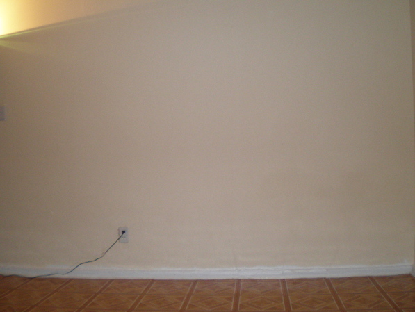
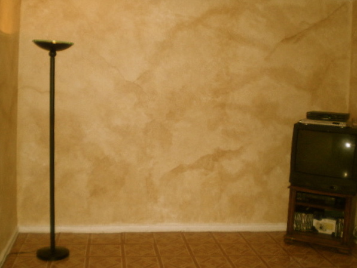

Below are questions asked by 2 customers concerning the colors we used on our video in faux painting Old World parchment finish. Take time to read the questions and answers as they may be the same ones you have. And check out the before and after pictures, that one of them sent in, too.
You can also watch some our faux painting videos on our Faux Painting Worshop, included in our Basic Faux Painting kit. They can be of help to you in choosing your faux finish and choosing your faux painting colors.
Hi Sandra,
First, I would like to thank you for your response and for helping me pick out the colors. I
received the Basic faux painting kit last week and now I'm actually
painting on the base coat. I watched the DVD. and I have one question for ya.
I'm painting the walls in Eggshell. The paint i bought is flat. Did I need to by the semi gloss??? I thought the glossy would make it tacky, but i noticed in the DVD u mention there are 3 types of paint. Florentine Brass for golden brown color, Black brown for the other color.
Should these be a bit glossy??? I dunno. I'm afraid to screw it all up. lastly, i noticed since you use glaze to paint your walls, you're able to wipe the paint off immediately if you feel you've made a mistake. Would i be able to do the same with these two colors??? or since its latex no can do. Or is glaze and Walmart just does the mixing for you???? Sorry for asking so many questions. I promise to email the pictures of the final result.
Thanks,
Sophia A. Idrissi
No problem Sophia,
You can never ask too many questions. When you add glaze to any paint, acrylic or latex, it makes it
stay wet longer. So you have time to wipe off if you don't like what you see. Remember that it will
dry a little darker than when it is wet. Lowe's used to mix glazes for you but not anymore. As I
said, I used Floetrol for my glaze. The reason I mix my own is cause I can always add more paint if
it's too light. If you get it pre-mixed, you're stuck or have to buy another. As for the paint to
use with the glaze, it doesn't matter but I always use satin cause then I could use the paint on
another project. The colors will look dark to you but keep in mind that when you add the glaze and
pounce it with the poofy pad, the colors will look a whole light lighter. Let me know how it goes.
Please remember to practice on a few boards first till you get the darkness and style you want. You
can never practice enough. I am faux painting vinyl tile in my family room and I have done 2 boards
so far and am going to adjust one of them.
God bless,
Sandy
Hey Sandy,
The walls are absolutely marvelous. I can't believe how they came out. You are going to be shocked.
It's absolutely beautiful. I love it so much, I walk around the living greeting each vain added. I
have names for them too. I wanted this my whole life. I love it!
I have other ideas for the hallway. I'm going to attempt to make the brick faux effect. I can't wait. but I just wanted to let you know, I'm your biggest fan.
I didn't have much problems. I did it with my bf. I had the small poofy, while he had the large. We rocked out, real fast. At least we thought it was fast. It took the whole day, but we blended like crazy. Then went back and put in the dark hues. Later we used the dark hues to give us direction on where to put the vains. The walls were talking to us. It was so easy. The coloring just fell into place. Some walls came out lighter. Then we went back and added the dark hues and once we did that the rest is history.
Hopefully, my friends love it so much- they'll bring some business over to you! Before and after pictures are below.
Speak to ya soon,
Sophia Assaad-Idrissi


Good morning Sandy,
I am having trouble initiating the old world parchment look. I purchased the colors you suggested in
your color guide. I found that the two colors looked very similar. Anyway I tried it. I found that
the dark brown color was taking over the lighter color. So I tried the colors suggested in your
letter to Sophia. Am I using the wrong color? Why is the dark brown over powering the other color?
Can you please help? Can you also inform me if I am using the wrong color?
P.S. Your help is greatly appreciated.
Natasha
Dear Natasha,
I just talked to my brother this morning and he said the same thing as you. However, when I fauxed
the last 3 houses with the same colors, I had no problem. Strange but maybe you are loading the
palette with more of the Black brown than you are the Florentine Brass. The reason the color is dark
is so you use more glaze than paint and you get more open time. Use up to 2 more parts glaze than
paint for the brown color and then if it's too dark, you can load only one section of the palette
with the brown instead of two. You see that Sophia had no problem, so you should get the same look.
Remember to space out the pressed sections of the palette. My brother was not doing that (he didn't
remember what the DVD said) and this morning he asked about it. I told him to watch the video again
and again (terms, prep, and tips) so he can get the whole faux painting thing down - open time,
avoiding lap lines, etc. Did you faux paint your board with satin finish? I noticed the eggshell is
harder to faux on and the colors come out darker because it is flatter than the satin. Again,
everyone's taste is different and so is their browser/computer. So what it looks like on your
computer is different than mine. Maybe I prefer it darker and you like it lighter. Adjust with the
amount of glaze and use some glycerin as I said on the DVD for more open time. The more spaced out
the sections of glaze, the more blended, softer and lighter it will look. The closer the sections,
the more dark, muddled and textured the look. Hope this helps. God bless you,
Sandy Silva
Thank you, for your swift reply. One question though in the video you mentioned one of the colors
used gave the appearance of a golden brown and the other like a coffee color. On your palette in the
video I noticed it appeared golden brown and the colors were distinctly different. When I used them
neither color looked golden brown no matter how much glaze I used. They both looked like chocolate
brown. The more glaze I used it did not look golden and that is why I think I am doing it wrong or
using the wrong colors. Also, yes by board is a satin finish. I will incorporate what you have said
and I thank you greatly. I hope I have not been a bother.
Natasha
No bother, Natasha. To verify exactly, I used acrylic colors in the DVD. The
colors are raw sienna and burnt umber. Since customers began to ask what colors to use, I decided to
get the colors matched to latex paint. There is a slight difference but not much. When I fauxed with
the latex paint, it was very similar to what I got when I did the video. Remember that the video is
film and it had light on it for the benefit of seeing the technique. In person, it is not light.
Check to see if the color you got from Sherwin Williams is Florentine brass because it definitely is
golden brown when you add glaze to it. It is no where near chocolate brown. Let me know.
God bless you,
Sandy
Hi Sandy,
It’s me again. I have another question. For bathrooms, can I use a semi gloss base coat and a semi
gloss to top coat with glaze?
Thanks
Natasha
Yes. I have worked on semi gloss base coat and it's a little tricky if you are
doing a color wash. Sponging or ragging is fine on any surface but on the semi gloss, the glaze
begins to just dry but takes awhile to dry completely so when you go to blend the next section, it
takes off the other area just a bit. I say try on a poster board and give it 2 good coats so it
feels like the wall when you are practicing. Semi gloss is great for negative (ragging off)
techniques which I hope to cover in the future. How did the rest go? Did the colors finally work for
you?
Sandy
Dear Sandy, Well, I tried the Florentine Brass and Turkish Coffee from SW again. I watched the video
about ten times, and I did not use as much paint in the glaze. To me it still is coming out too
dark. I paused the video when you pressed the colors on the board. I compared what I had to the TV.
Your colors appeared to be lighter and have a reddish hue to it. I completely understand about
lighting and browsers, but I just do not know what I am doing wrong. I am going to try and add the
fireweed and do three colors and see how that turns out. If not, I am going to try the Ivoire and
Latte color wash in Semi gloss. Thank you so much for your help and suggestions.
Natasha
I used a pure white basecoat. What color is your basecoat? Maybe that makes a
difference. If you are not using much paint, then definitely the color should be much lighter. You
could always leave out the Turkish Coffee color and add just a little hint of it here and there
after the Florentine Brass has dried. I congratulate you on the patience you are showing in trying
to get just the right look. Many just settle cause they want it done NOW. :)
Sandy
Thanks for the inspiration Sandy. There was a time that I was going to give up, but looking at your
web site and all the wonderful samples people create from your product has kept me going. I know I
will find the right look and when I do, I can’t wait to show you. The base coat I used was off
white. I will pick up a quart of pure white and see if that makes the difference. Again, thank you
and if I do not hear from you have a wonderful Holiday.
Natasha
I am going shopping and getting off the computer for awhile so I am glad you
wrote right back. Get a quart of Sherwin Williams Colors to Go which is $5.99. Get satin color Ibis
White and have them show you a swatch first to see if it is whiter that what you were using. Have a
blessed Christmas yourself.
God bless,
Sandy
Hello Sandy,
I was in an art store over the weekend and decided to look at some acrylic paint. I found the raw
sienna and burnt umber, so I bought small bottles. I have not tried them yet. My question is if I
like this finish how durable would it be on the walls, being that I have three young children and
there hands are all ways on the walls. Second, I would like to faux finish two bathrooms. Would it
hold up against water. Third, does it give you a flat finish or some shine.
Thanks
Natasha
Hey Natasha,
Hope you had a blessed Christmas. Sorry I have been busy with family and haven't been able to get to
your letter. Acrylic paint is permanent so you can't get it off the walls if you try. All paint
takes some time to cure but after 30 days, you can wash them. The glaze will give any paint a slight
shine and allow you to wash them. Of course, you don't want to use harsh chemicals or brush. Keep in
mind if you don't make enough glaze to cover the walls, you will have to make more, so keep a little
puddle of the mix off to the side so you can match the new batch. It's hard to measure the acrylic
paint but you could try with a spoon, like maybe one spoon of burnt umber with 3 spoons of raw
sienna. Then adjust and try to keep the formula but even if you can't, you can just keep adding
color till it's what you want. Remember also that the color will look lighter on the wall cause you
are not painting solid but as a wash. Hope it comes out like you want. Let me know.
God bless you,
Sandy Silva

Includes Basic DVD kit